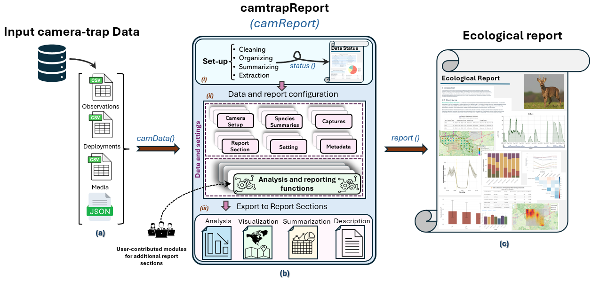

camtrapReport
Reproducible reporting for camera-trap monitoring data


camtrapReport transforms camera-trap data in Camtrap DP format into two complementary reports:
- Data Status Check — assesses data completeness, consistency, annotation quality, and spatiotemporal coverage, highlighting issues that require attention.
- Ecological Report — integrates selected ecological analyses, figures, tables, maps, and automatically generated explanatory text informed by the data, metadata, and analytical results.
A camReport object brings together input data, settings, and reusable reporting modules. Users can select and customize sections, or develop modules and Analytical Profiles for particular monitoring workflows. The package complements, rather than replaces, tools for camera-trap data management and specialized ecological analysis.
The optional graphical interface gui() is designed to make these workflows accessible to users with different levels of programming experience. Shiny is used only for this interface; code-based workflows using camData(), report(), and status() do not require launching Shiny.

Overview of the camtrapReport workflow, from standardized camera-trap data to automated reporting. See the Data Status Check, Ecological Report, and Module Management guides for the corresponding components of the workflow.
Use in practice
The package has been developed and tested with camera-trap datasets from monitoring sites across five continents, including the European Observatory of Wildlife (EOW). These applications inform software development but do not constitute formal validation of ecological estimates or a systematic usability assessment. See Resources.
Installation
camtrapReport requires R 4.1.0 or later. Install it from GitHub using pak:
if (!requireNamespace("pak", quietly = TRUE)) {
install.packages("pak")
}
pak::pkg_install("spatialecology/camtrapReport")Alternatively, install the package from R-universe:
install.packages(
"camtrapReport",
repos = c(
"https://camera-traps.r-universe.dev",
"https://cloud.r-project.org"
)
)Some modules require additional R packages. To install optional dependencies for available modules, run:
camtrapReport::install_all()Use the R functions directly, or configure and generate reports through the optional Shiny interface, gui(cm). Shiny is not needed to run the R workflow. Report-generation time depends on dataset size and selected analyses.
Prepare the input
Provide a Camtrap DP dataset as a directory or ZIP archive. The main dataset cannot currently be supplied as in-memory R tables; optional habitat and study-area inputs can be R objects. Convert other formats to Camtrap DP before import (e.g., with Biowatch or a custom workflow).
Input validation: camtrapReport expects datasets in Camtrap DP format but does not perform full schema validation during import. Data exported directly from platforms such as Agouti already follow this standard. For datasets created or modified independently, users are encouraged to validate compliance with the Camtrap DP specification before calling camData(). The Data Status Check generated by status() assesses data completeness and consistency but does not replace schema validation.
Quick start
The example uses a bundled subset of GMU8_LEUVEN, with habitat data and a study-area boundary. Input files are copied to a temporary directory so the example can run independently of the installed package files.
library(camtrapReport)
# Prepare the example data
example_root <- tempfile("camtrapReport-example-")
dir.create(example_root)
file.copy(
system.file("external", "dataset", package = "camtrapReport"),
example_root,
recursive = TRUE
)
#> [1] TRUE
habitat <- read.csv(
system.file("external", "habitat", "habitat.csv", package = "camtrapReport")
)
study_area <- system.file(
"external", "study_area", "study_area.shp",
package = "camtrapReport"
)
# Create a camReport object
cm <- camData(
data = file.path(example_root, "dataset"),
habitat = habitat,
study_area = study_area,
update = TRUE
)
#> The camReport object is being created...
#> Dataset size: 6.6 MB.
#> File size looks modest, but full object creation may still take several minutes depending on the number of records.
#> Taxonomic class is unavailable for 43 recorded taxa. Class-dependent groups and mammal counts may be incomplete; missing classification does not indicate ecological absence. Supply source classifications or explicitly enable GBIF enrichment and rebuild with update = TRUE.
#> Setup is done!
#> Data loaded successfully in 1 min 07 sec.
#> camReport object is ready for GMU8 LEUVEN.
cm
#> Camera trap Object for the site : GMU8 LEUVEN
#> =====================================================
#> Total number of sequences : 10182
#> Total number of observations : 10798
#> Total number of animals : 4693
#> Total number of detected species: 41
#> Date/time (years) with data : 2018, 2019, 2020, 2021, 2022, and 2023
#> -----------------------------------------------------camData() accepts a Camtrap DP directory or ZIP archive. Optional habitat and study-area inputs support additional formats; see ?camData for details.
File storage and caching
Earlier versions could create __camReport_Object.rds (a processed-object cache) and study_area.map (a saved study-area boundary) beside the dataset. Current folder imports do not create either file automatically. Existing legacy caches remain readable, and existing study_area.map files are left untouched; study areas remain in memory unless explicitly saved.
By default, camData() reads folder-based datasets without modifying the input files or creating a cache. To save the processed object for reuse, specify cache_file. Two alternative input methods are shown below:
# From a folder
cm <- camData(
"path/to/dataset",
cache_file = "path/to/output/analysis.rds"
)
# Alternatively, from a ZIP archive
cm <- camData(
"path/to/dataset.zip",
path = "path/to/output",
cache_file = "path/to/output/analysis.rds"
)The output directory must already exist. To reuse a saved object, provide the same cache_file; to rebuild it, use update = TRUE, overwrite = TRUE. Legacy __camReport_Object.rds caches remain readable. For ZIP imports, keep the extracted files in a persistent directory to preserve source and image paths across sessions. To retain generated reports, specify an output filename; otherwise, outputs are temporary. In the GUI, select an output directory before importing ZIP files or saving results.
Generate a Data Status Check
status() generates a Data Status Check summarizing spatial and temporal coverage, data completeness, classification consistency, and annotation quality. It highlights potential issues requiring attention before ecological analysis.
status_file <- status(cm, view = FALSE)Generate an Ecological Report
report() combines selected modules, tables, figures, maps, and data-informed narratives into a reproducible Ecological Report. Modules can be selected, reordered, or extended. The function returns the output path; view = TRUE opens the completed report.
report_file <- report(
cm,
view = FALSE
)
if (inherits(report_file, "try-error")) {
stop(as.character(report_file), call. = FALSE)
}Available analyses
Built-in modules cover study-area and sampling descriptions, camera locations, sampling effort, image and data processing, species detections and capture-based indices, species richness and accumulation, co-occurrence, activity patterns, habitat associations, spatial detection intensity, and Random Encounter Model (REM) density estimation. Outputs depend on the available data, module requirements, and methodological assumptions.
Explore the Module Catalog to compare available modules in the Data Status Check, default (Global) and EOW reports, including methods, required inputs, and settings. Some sections depend on optional packages, data availability, or analytical prerequisites and may be absent from a particular report. Use section_names() to inspect available sections in R.
Analytical Profiles
Standardized data can yield different ecological estimates when analytical choices differ. Analytical Profiles specify reusable selections of modules, methods, settings, assumptions, and reporting conventions to improve consistency across sites and monitoring rounds.
Alongside the default profile, camtrapReport provides an EOW-oriented profile configured for European Observatory of Wildlife monitoring. Additional profiles are under development; users can define and share their own without implying formal network endorsement.
See the Profiles guide or ?reportProfile. To propose a workflow for your network, join GitHub Discussions.
Configure a report
Inspect metadata and select report modules (this changes the sections used in subsequent reports):
info(cm, name = c("title", "authors"))
selected_sections <- section_names(
keep = c(
"introduction",
"methods",
"study_area",
"sampling",
"effort"
)
)
sections(cm, selected_sections)Customize report content
Modules may combine predefined narrative templates, Camtrap DP metadata, and computed results; this is where much of the report text originates. Review generated text before publication. Customize existing modules or add new ones in a writable project directory rather than editing installed package files; see Module management.
Interpretation and reproducibility
A completed Data Status Check does not establish suitability for ecological inference. Interpret results in light of sampling effort, detectability, spatial and temporal coverage, and method-specific assumptions.
Retain source data, additional inputs, selected modules, analytical settings, and package versions for reproducibility. Review maps and outputs for sensitive species locations before sharing.
Taxonomy enrichment: camData() defaults to enrich_taxonomy = FALSE and makes no GBIF requests. Set enrich_taxonomy = TRUE explicitly to send species names to GBIF and fill missing classifications; existing source classifications are preserved. Use update = TRUE to rebuild an existing cache with the revised setting. Missing classifications can affect taxonomic-group filters. See ?camData.
Example-data provenance
The bundled example is a reduced subset of the GMU8_LEUVEN Camtrap DP dataset, published by INBO through GBIF. It contains 8 locations, 87 deployments, 15,492 retained media records, and 11,092 observations. This derived dataset is for demonstration and testing, not ecological inference. See the preparation notes.
Relationship to other camera-trap packages
camtrapdp supports Camtrap DP data validation and transformation; camtraptor supports data exploration; and camtrapR and ct support broader camera-trap workflows. camtrapReport complements these tools by assembling data-status diagnostics, ecological analyses, and explanatory narratives into modular reports.
Citation
citation("camtrapReport")Author
camtrapReport is developed and maintained by Elham Ebrahimi.
Contributing
Contributions to code, documentation, modules, and Analytical Profiles are welcome. See the contributing guidelines and Code of Conduct.
Reproduce a GUI workflow
Select an output directory in the GUI. Reports and their analytical R Markdown sources go in GUI/reports/, separately saved objects in GUI/objects/, and GUI ZIP imports in GUI/data/. Direct report() and status() calls retain their existing destination rules.
In Generate, choose Export Reproducible Workflow. This saves the current configured object and both report types with attached modules under GUI/reproducibility/, together with reproduce.R, reproduce.Rmd, required local assets, a manifest and sessionInfo.txt. Further exports use numbered subdirectories; earlier bundles are never replaced. Move the whole bundle, install the recorded camtrapReport version and dependencies, then run:
Alternatively, use rmarkdown::render("reproduce.Rmd"). The document launches the same script in a fresh R process. The first run writes reports/; later runs write reports/run-001/, etc., preserving previous reports. Rendering the R Markdown again replaces its summary reproduce.html only.
This is snapshot-based report regeneration, using stored inputs, settings, selected modules, edited narrative, spatial objects and model caches. Existing report functions determine what is recalculated; cache reuse is not independent model refitting. Full reproduction from original Camtrap-DP inputs requires import/construction provenance and remains a future enhancement.
Local logos and required cached appendix photographs are included. Missing required assets block export. Online basemap imagery and arbitrary external resources in custom modules cannot be archived automatically; use self-contained trusted modules for portable reproduction. Pandoc and selected modules’ optional packages are required. The exported README explains version and asset limits.
Review before sharing: objects and reports can contain sensitive species locations, observations and project metadata. Export never uploads data.